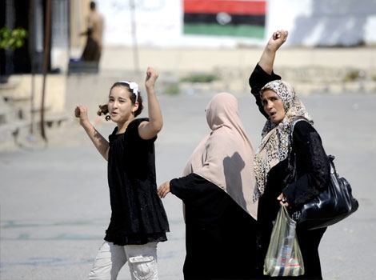

|
|

زنان لیبی را تنها نخواهیم گذاشت
يكشنبه29 آبان 1390
تغییربرای برابری - شهرزاد امین ، خیزش مردم برعلیه دیکتاتوری در کشورهای شمال آفریقا شور و شعف زیادی را در میان مردم سراسر جهان برانگیخت. حس همبستگی و امید به توانمندی توده مردم در کسب آزادی و بازیابی حرمت و عزت انسانی خویش در بسیاری زنده شد. اعراب با انقلاب هایشان جهان را غافلگیر کردند و این باورغلط حاکم بر اذهان عمومی را که "مردم عرب ظرفیت دمکراسی را ندارند" در هم شکستند. حضور گسترده زنان عرب در این خیزشها تصویر "خانه نشین، ناآگاه، ضعیف و قربانی" را که بویژه افکار عمومی غرب از زن مسلمان عرب داشت، خدشه دار کرد. موج این انقلابها تاثیرات برانگیزاننده ای در میان جوانان کشورهای مختلف بر جای گذاشت تا جایی که جوانان اسرائیلی نیز "همانند یک مصری قدم بر داشتند" و دست به اعتراض علیه سیاست های دولت خود زدند.

کشور دیکتاتور زده لیبی نیز از این قافله عقب نماند. این زنان لیبیایی بودند که برای اولین بار برای آزادی زندانیان سیاسی دست به تظاهرات زدند. اعتراضی که با واکنش خشن رژیم قذافی مواجه شد. خشونت لجام گسیخته رژیم قذافی در مقابله با اعتراضات مردم، بهار عربی را با خزانی زود رس مواجه کرد. دخالت نظامی ناتو در لیبی وقفه ای در گسستن زنجیر اسارت بدست خود مردم بوجود آورد.
لیبی کشوری با مساحتی پهناورتر از ایران دارای 6،5 میلیون جمعیت است. حدود 80 درصد از مردم در شهرها زندگی می کنند. بیش از 95 درصد از مردم این کشوررا عربها و بربرها تشکیل می دهند و مابقی نیز از اقلیتهای قومی هستند که در طول تاریخ به این کشور مهاجرت کرده اند. در لیبی متوسط طول عمر 78 سال است . لیبی کشوری با ساختار قبیله ای است و در آن حدود 140 قبیله کوچک و بزرگ وجود دارد. مذهب رسمی کشور اسلام است واسلام سنوسی و شاخه های صوفی در مناطقی از لیبی نفوذ گسترده ای دارند. بیش از 80 درصد مردم لیبی باسواد هستند. تحصیل برای شهروندان مجانی و برای سنین 6 تا 15 سال اجباری بوده است. اغلب دانش آموزان دوران دبیرستان را دختران تشکیل می دهند و بنا به آمار بیش از 81 % زنان سواد خواندن و نوشتن دارند. بر اساس آمار سال 2001 میلادی 16% از زنان لیبیایی تحصیلات دانشگاهی و 43% دارای تحصیلات دبیرستانی هستند. طبق بررسیهای بعمل آمده در اواخر سال 2006 میلادی 27% از زنان لیبی شاغل بوده اند و در بین آنان از وکلای دادگستری گرفته تا پزشک، قاضی و شغلهایی در سطح وزارتخانه ها نیز دیده می شود. اوایل دهه 60 میلادی زنان از حق رای دادن برخوردار شدند. سن قانونی ازدواج 18 سال است و زنان از سال 1978 میلادی به این سو از حق طلاق برخوردارند (این آمار و ارقام مربوط به دوران حکومت قذافی است).
زنان و انقلاب لیبی
سیاستهای معمر قذافی در زمینه تامین رفاه اجتماعی و ارتقاء موقعیت زنان موضوع بحثهای زیادی بوده است. نظریه عموم دال بر این است که مردم کشور لیبی ازرفاه اجتماعی بالاتری نسبت به سایر کشورهای عربی و افریقایی برخوردار بوده و برخی این را حاصل خدمات قذافی می دانند. معمر قذافی از طریق کودتا به قدرت رسید وکشوری با منابع عظیم طبیعی را زیر سلطه خود گرفت. بیش از 40 سال حکومت دیکتاتوری قذافی نشان داد که وی در اعمال دیکتاتوری شیوه های منحصر به فرد خویش را داشت. او مردی خود شیفته بود که با ایده های عجیب و غریب و کتاب سبزش کشور لیبی را به آزمایشگاهی برای آزمون فرضیه هایش تبدیل کرده بود. قذافی با تکیه به خزانه ایی سرشار از درآمد فروش نفت و با شیوه های پوپولیستی که ظاهرن می توانست نمودی از توجه وی به رشد کشور باشد، سعی درتحکیم موقعیت خود می کرد. در سیاست هایش نسبت به زنان می توان بعنوان نمونه به گارد حفاظتی وی که تمامن از زنان جوان تشکیل شده بود، اشاره کرد. ظاهر امر این را نشان می داد که وی خواهان شرکت زنان در تمام سطوح اشتغالی است. اما برخی معتقدند که قذافی برای تضعیف موقعیت رقبای اسلام گرا و سران قبایل مختلف چنین سیاستهای واکنشی را اتخاذ می کرده است. مقابله رژیم قذافی با مطالبات بر حق زنان در جریان انقلاب لیبی نشان داد که وی هیچگونه اعتقادی به حرمت و حقوق برابر زنان نداشت.
زنان لیبی اما از اولین کنشگران انقلاب لیبی بودند. آنها در فوریه 2011 در اعتراض به زندانی شدن بستگانشان دربن قازی دست به تظاهرات زدند. با اوجگیری تظاهراتها زنان فعالانه در صحنه های مختلف مبارزه حضور یافتند. شورا اسماعیلیان روزنامه نگار ایرانی-سوئدی که در جریان مبارزات مردم لیبی از این کشور دیدار به عمل آورده بود در گزارشی برای تارنمای سوئدی پرسپکتیو فمینیستی می نویسد:
- هر روز صبح ده زن آشپز راس ساعت هفت صبح جمع شده و دست به تقسیم کار می زنند. رها سلیمان 47 ساله و اولین آشپز است. وی می گوید "ما روزانه برای 10هزار نفر غذا می پزیم که برای انقلابیون برده می شود. علاوه بر این برای پنج هزار دیگر نیز غذا پخته می شود که در بین خانواده هایی که در اثر جنگ آواره و در مناطق مختلف پراکنده شده اند، تقسیم می شود."
- رها بیوه و مادر 6 پسر است، سه تن از پسرانش در خط مقدم جبهه حضور دارند. وی اضافه می کند "از همان روزهای آغازین انقلاب در آن شرکت کردم، خوشحالم که سالم هستم تا بتوانم کمک کنم. شرکت در انقلاب یک وظیفه است و من افتخار می کنم که هر روز می توانم به اینجا بیایم."
زنان لیبی فقط پسرانشان را به جبهه های جنگ با قذافی نفرستادند. آنان در مخفی کردن انقلابیون، جمع آوری کمکهای مالی، تماس با خبرنگاران، کمک به مجروهان و پناهندگان و خلع سلاح سربازان قذافی نیزنقش بارزی ایفا کردند. در خیابان های تریپولی، پایتخت لیبی، زنان اونیفورم پوش مسئولیت کنترل شهر و رعایت قانون را بر عهده داشتند.
تجاوزات وسیع جنسی به زنان
رژیم قذافی در مقابله با اعتراضات آزادیخوانه زنان از شیوه شناخته شده خشونت مطلق و تجاوزات جنسی استفاده کرد. سازمانهای دفاع از حقوق بشر مکرر از تجاوزات گسترده جنسی به زنان لیبیایی توسط سربازان ارتش قذافی خبر دادند. رژیم قذافی در این زمینه نیز از شیوه های خاص خود استفاده می کرد. سازمان ملل متحد از پخش داروی ویاگرا در بین سربازان برای تشویق آنان به تجاوز جنسی، خبر داد. تشکلهای زنان لیبی از تجاوز جنسی به پنج هزار زن خبر دادند. زنان لیبیایی اما عقب ننشستند و با شکستن سکوت و افشاگری در یک عرصه بشدت تابو شده در جامعه ای سنتی و قبیله ای به مقابله با رژیم قذافی ادامه دادند. ایمان العبیدی وکیل 25 ساله لیبیائی یکی از قربانیان تجاوزات جنسی سربازان ارتش قذافی در افشاگری شجاعانه خویش توجه جهانیان را به خود جلب کرد. او در اواخر ماه مارس سراسیمه وارد جمع خبرنگاران خارجی در هتلی در تریپولی شد و در حالی که فریاد می زد، از تجاوزات مکرر سربازان رژیم قذافی به خود پرده برداشت. تعدادی از پرسنل هتل سعی در خاموش کردن صدای وی داشتند. آنها فریاد می زدنند "خائن تو فکر کردی کی هستی". یکی سعی کرد پتوئی روی سرش بیندازد. خدمتکار دیگری سعی کرد از فیلمبرداری خبرنگاران جلوگیری کند. اما ایمان العبیدی همچنان فریاد می زد که "ببینید سربازان قذافی با من چکار کردند. آنها مرا مورد تحقیر قرار دادند، مرا بستند و بر روی من مدفوع و ادرار کردند. شما می گوئید که شما برادران من هستید اما من نمی توانم به شما اطمینان کنم." او پای خونین ، صورت و دستان مجروحش را نشان داد. در نهایت پرسنل وفادار به قذافی و نیروهای مسلح رژیم ایمان را او کشان کشان ، در مقابل چشمان حیرت زده خبرنگاران خارجی، از هتل بیرون بردند.
شورای انتقالی لیبی
این شورا در بهار سال گذشته در شهربنغازی اعلام موجودیت کرد و از حمایت وسیع ناتو برخوردار شد. دو تن از سران سابق رژیم قذافی در راس این شورا قرار گرفتند. مصطفی عبدالجلیل ( وزیر دادگستری رژیم قذافی که در کشتارهای مخالفان آن رژیم مشارکت داشته ) و محمود جبریل ( که در چهار سال آخر دوران قذافی در طراحی سیاست های اقتصادی رژیم نقش مهمی داشته است). شورا بیش از 40 عضو داشت که فقط یک تن از آنان زن بود. حضور کمرنگ زنان در شورای رهبری انتقالی موجبات نگرانی و سرخوردگی زنان را بوجود آورد. برخی این حرکت را حتی ارتجاعی تراز سیاست رژیم قذافی در مورد زنان خواندند. از طرف دیگر شورای انتقالی لیبی بدلیل شکنجه و آزارسربازان اسیر و کارگران مهاجر مورد انتقاد دیده بان حقوق بشر قرار گرفت. به قتل رساندن و مثله کردن پیکر قذافی نیز سیاستهای بشر دوستانه این شورا را یک بار دیگر زیر علامت سوال برد.
سرنگونی دیکتاتوری 40 ساله قذافی پایان یک فصل تاریک بود. شور و شعف مردم خسته از دیکتاتوری و جنگ داخلی چندین ماه را به همراه داشت. اما دیری نپایید که تردیدها و نگرانی هایی که در مورد تبعیض علیه زنان وجود داشت تشدید پیدا کرد. مصطفی عبدل الجلیل رئیس شورای موقت لیبی به عنوان اولین اقدام در تاریخ 23 اکتبر در نطق پیروزی خود خواستار لغو محدودیت قانون چندهمسری برای مردان و استقرار قوانین مردسالارانه زیر عنوان قانون شریعت شد. این اظهارات بلافا صله مورد استقبال عبدالحکیم بل حاجی، عضو شورای رهبری انتقالی و از پایه گذاران شاخه القاعده در لیبی که به "گروه جنگنده مسلمان لیبی" تغییر نام داده است، قرار گرفت. این موضعگیری نشان داد که اولویت اصلی حاکمیت جدید لیبی تضعیف حقوق زنان است. تجربه تلخ ایران، افغانستان و عراق این بار نیز در لیبی تحت حمایت "مداخله گران بشر دوست" غربی تکرار شد.
نتیجه گیری
آنچه که در لیبی گذشت و می گذرد را نمی توان صرفن از دیدگاه "قذافی بد در مقابل ناتوی خوب" و یا با لعکس بررسی کرد. بکارگیری خشونت مطلق از طرف رژیم قذافی جوانان این کشور را مجبور به مبارزه مسلحانه کرد. اما ساده انگارانه خواهد بود اگر دخالت نظامی ناتو در لیبی را بشر دوستانه تلقی کنیم. دخالت ناتو حتا هدفی برتر از تامین منافع اقتصادی داشت. غرب می بایستی سلسله انقلابات پیوسته ای که دیکتاتورهای وابسته را یکی بعد از دیگری سرنگون می کرد، به نحوی مهار می ساخت. انقلاباتی خودجوش، فرا ایدئولوژیک و مردم محور وآزادی خواهانه، که حق شهروندی و کرامت انسانی را هدف خود قرار داده است. انقلاباتی که در آن زنان عرب و آفریقایی عرض اندام کرده و تمامی فرضیات مخدوش افکار عمومی غرب در مورد آنان را برای همیشه باطل اعلام کردند. انقلاباتی که الهام بخش جوانان اروپایی، آمریکایی و اسرائیلی در مبارزاتشان با ناعدالتی های اقتصادی و اجتماعی شد. تردیدی نیست که تجاوز به هزاران زن ، به قتل هزاران جوان توسط رژیم قذافی، به هلاکت رساندن 600 هزار لیبیایی و ویران سازی کشور لیبی توسط ناتو و تجاوزآشکار به حقوق زنان توسط شورای رهبری، قلبهای زیادی را جریحه دار کرده است. اما در این میان زنان منطقه به آن درجه ازهوشیاری، آگاهی و همبستگی نائل آمده اند که با اتکاء به خود، فراتر از هرگونه مرزبندی های مخدوش ومحدود کننده، در جهت رفع هرگونه تبعیض، درهر چارچوبی و به منظور کسب حرمت و کرامت انسانی شان به مبارزه شان ادامه دهند. زنان برای رسیدن به این اهداف فقط و فقط به نیروی خود اتکاء می کنند.
منابع:UT
http://feministisktperspektiv.se/
http://www.thehindu.com/opinion/op-ed/article2450486.ece
http://translate.google.se/translate?
hl=sv&langpair=en%7Csv&u=http://saurabhdhanuka.com/2011/05/05/i-am-an-american-muslim-libyan-woman-and-i-am-proud-of-it/
http://sv.wikipedia.org/wiki/Senussi
http://en.wikipedia.org/wiki/National_Transitional_Council
http://www.landguiden.se/Lander/Afrika/Libyen/Utbildning
http://www.landguiden.se/Lander/Afrika/Libyen/Utbildning#countries=LBY
http://en.wikipedia.org/wiki/Women_in_Libya
http://translate.google.se/translate?
hl=sv&langpair=en%7Csv&u=http://snippits-and-slappits.blogspot.com/2011/11/how-gaddafi-improved-lives-of-libyan.html
.